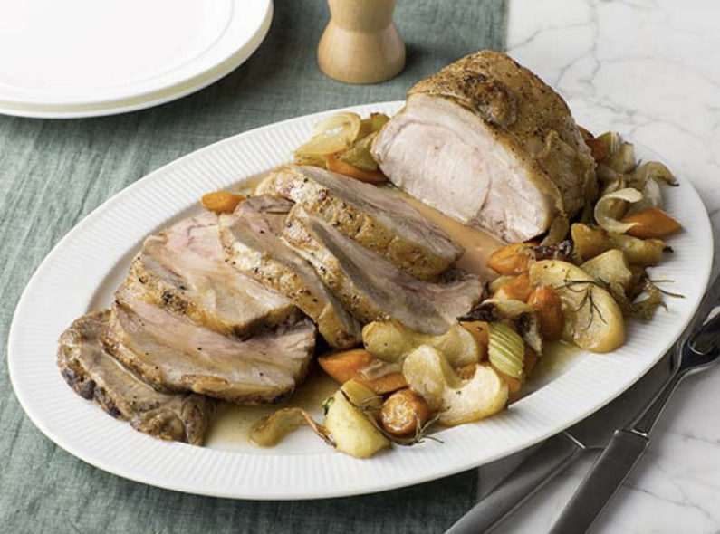

Roast Pork Loin With Apples

This Food Network recipe could have an entire essay in front of it, but I'll be kind: it's tasty. I make it for Yule. Sometimes I double the sauce and add those teeny tiny gold potatoes, or substitute parsnip for one of the carrots. Enjoy.
Ingredients
- 2 tablespoons vegetable oil
- 1 (2-pound) boneless center cut pork loin, trimmed and tied
- Kosher salt and freshlou ground black pepper
- 1 medium onion, thickly sliced
- 2 carrots, thickly sliced
- 2 stalks celery, thickly sliced
- 3 cloves garlic, smashed
- 3 sprigs fresh thyme
- 3 sprigs fresh rosemary
- 4 tablespoons cold unsalted butter
- 2 apples (such as Cortland or Rome) peeled, cored, and cut into 8 slices
- 2 tablespoons apple cider vinegar
- 1 cup apple cider
- 2 tablespoons whole grain mustard
Steps
- Preheat the oven to 400 degrees F.
- In a large ovenproof skillet heat the vegetable oil over high heat. Season the pork loin all over generously with salt and pepper. Sear the meat until golden brown on all sides, about 2 to 3 minutes per side. Transfer the meat to a plate and set it aside.
- Add the onion, carrot, celery, garlic, herb sprigs, and 2 tablespoons of the butter to the skillet. Stir until the vegetables are browned, about 8 minutes. Stir in the sliced apples, then push the mixture to the sides and set the pork loin in the middle of the skillet along with any collected juices on the plate. Transfer the skillet to the oven and roast the loin until an instant-read thermometer inserted into the center of the meat registers 140 to 150 degrees F, about 30 to 35 minutes.
- Transfer the pork a cutting board and cover it loosely with foil while you make the sauce. Arrange the apples and vegetables on a serving platter and set aside. Remove and discard the herb sprigs. Return the skillet to a high heat and add the vinegar scraping the bottom with a wooden spoon to loosen up any browned bits. Reduce by half then add the cider and reduce by about half again. Pull the skillet from the heat and whisk in the mustard, and the remaining 2 tablespoons of cold butter. Adjust the seasoning with salt and pepper, to taste.
- Remove the strings from the roast and slice into 1/2-inch thick pieces and arrange over the apple mixture. Drizzle some sauce over meat and serve the rest on the side.
Home